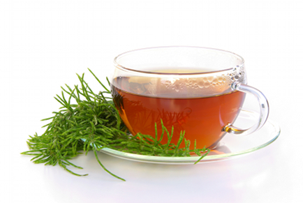

Южно африкански чай - Ройбос и Хъни Буш
Запарва се с вряла вода, между 8 и 10 минути обикновено са достатъчни. Количеството трябва да е по-щедро: 2 гр. или 5 ч.л. на всеки 200 мл. вода. Няма проблем да остане във водата по-дълго. Запарката запазва качествата си цяла седмица (съхранена в хладилник) и е може би най-добрият студен чай. И чист и подсладен е много приятен и лек на вкус. Отиват му лимон и всякакви други плодове, които може да добавите при запарката или след като го охладите.